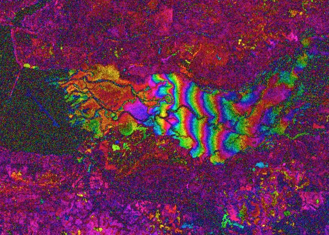

Act 1 of 3
What the map misses
Why can't the flood map see this flood?
Emergency managers, aid groups and flood insurers act on that blank map. Under trees, it can look like an all-clear.
The night shift Fly with NISAR
The fine print for the journey
Act 2 of 3
How NISAR sees it
How does a radar see water through trees?
Why NISAR
Same forest, same week, two radars
The global flood map's radar uses 5.6 cm waves that bounce off leaves. NISAR's 24 cm waves reach the water underneath. Drag the line across the flooded forest.
Every pass's signature, and C-band against L-band, in the results
The fine print
Open water is smooth, so radar waves bounce away from the satellite and it looks dark. Under trees, the same water bounces waves into the trunks and straight back, so a flooded forest looks brighter. To check the radar, we take the water level from river gauges and the ground height from lidar, estimate where the water is, and compare the two maps. "Hear the difference" plays each radar's dry-forest echo, then its flooded-forest echo, at the measured power ratios. The dry echo is a soft scatter; the flooded one rings in proportion to how much it brightened, standing in for the double bounce, so a radar that barely changed sounds the same twice.
Watch it move
Watch a hidden flood rise and fall
Scroll to move through the flood. NISAR passes again and again, so you can watch water spread through the forest and drain away.
The fine print
It mapped on ground the river says is dry.
Change at each gauge since the lowest pass, .
A figure in the results plots the river levels, the mapped areas and the score for every pass on one time axis.
Beat the satellite
Can you find the flood?
The gauges said this river was over its banks. The photo shows only trees. Paint where you think the water is, then see how you did against NISAR.
Drag on the photo to paint
The fine print
Only ground the river's gauges can label counts toward a score, exactly as in the frozen test. The sweep when you grade is an illustration of NISAR's pass, since an ascending pass builds its image from south to north. On a touch screen, the page scrolls outside the photo.
Act 3 of 3
Your turn
What about where you live?
Check your town
Is the flood map near you blind?
Each amber light is a town. Search, or click one.
The fine print
Amber lights mark towns where satellite flood maps are likely to have a blind spot. They don't mark floods, this isn't a flood forecast, and the population is the towns', not a count of people at risk. The green-teal lights are half-degree summaries of the atlas; each town's check uses the floodplain within 25 km.
After the story
The proof
How do we know it works, and where doesn't it?
Go deeper
Every test, including the failures
How much flooding the official map missed on three Gulf Coast rivers
What's next
Use NISAR's phase to measure water level under trees. In one Florida swamp during Hurricane Isaias, it showed the water rising; each band of color is about 16 cm. It's an early demonstration, checked against a dry-season control.
